스스로 굴러가는 소프트웨어 공장
영상이 말하는 소프트웨어 공장은 "문제 모으기 → 티켓 만들기 → 처리하기 → 다시 모으기"가 끊기지 않고 도는 구조예요. 사람이 다음 할 일을 정해 주지 않아도 앱이 쓰이는 모습에서 다음 일을 찾아내요. 그래서 발표자는 이걸 "스스로 개선한다"고 불러요.
아래 화면 왼쪽에 입력이 세 개 있어요. 오류를 추적하는 Sentry, 사용자 행동을 분석하는 PostHog, 그리고 GitHub 이슈예요. 셋 모두 오른쪽 Project Board 하나로 모여요. 이 텔레메트리에서 걸린 문제가 그대로 보드의 티켓이 돼요.
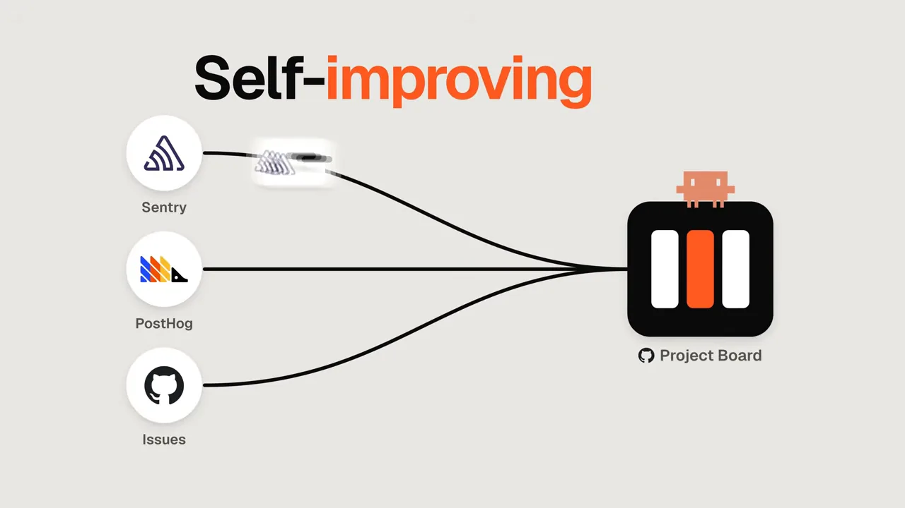
보드 위에서 티켓이 흐르는 길
보드는 칸반 보드 형태로, 실제 개발팀의 역할 분담을 흉내 내요. 빌더가 만들고, QA가 확인하고, 리뷰어가 머지를 결정해요. 아래 화면의 칸은 Backlog, Ready, Building, QA, Review, Done, Blocked 순서예요. 칸 이름 밑에 작게 적힌 super-build, super-qa, super-review가 그 칸을 맡은 에이전트예요. 설명 문구대로 카드는 Ready에서 머지까지 알아서 가고, QA나 Review가 카드를 Building으로 돌려보낼 수 있어요. 막힌 카드는 Blocked 칸에서 사람을 기다려요.
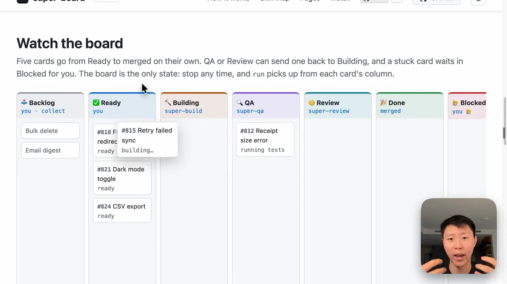
말로 설명한 흐름을 한 장으로 옮기면 이래요. 수집부터 Done까지 한 방향으로 가다가, 검사에서 걸리면 빌드로 되돌아가고, 끝나면 다시 수집으로 돌아가요.
flowchart LR T["텔레메트리
Sentry · PostHog · 이슈"] --> C["super-collect
티켓 수집"] C --> R["Ready"] R --> B["Build"] B --> Q["QA"] Q -- "통과 못 함" --> B Q --> V["Review"] V -- "고칠 것 있음" --> B V --> D["Done · 머지"] D -. "다음 티켓 모으기" .-> C R -. "사람 승인 필요" .-> K["Blocked"]
모든 기록은 GitHub 이슈에 남아요
티켓 하나는 GitHub 이슈 하나예요. 아래는 실제로 처리된 버그 이슈예요. 맨 위 [builder] [report] 댓글에 "built · round 1"이라는 제목, 만든 Draft PR #275 링크, 한 일(웹 테스트 1,357개와 타입 검사·린트 통과 등), 그리고 다음 단계 "qa"가 적혀 있어요.
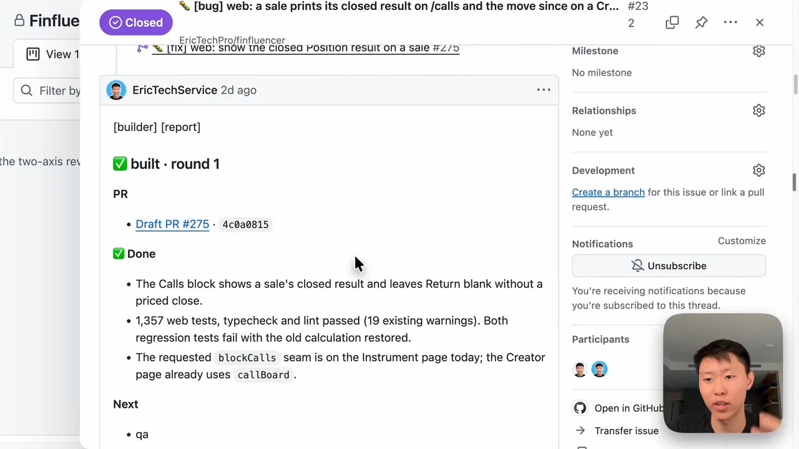
발표자는 이 방식을 몇 달 동안 앱 개발, 버그 수정, 사용자 이탈률 줄이기에 써 왔다고 해요. 에이전트가 엇나가지 않게 가드와 훅도 걸어 뒀고요. 이번에 그 전체를 super-board라는 이름으로 오픈소스로 풀었어요. 들어 있는 스킬은 발표자가 채널에서 리뷰해 온 스킬 중 고른 것과 직접 만든 것이에요.
판을 돌리는 super-board와 설정
전체 지도는 세 덩어리로 읽으면 돼요. 아래 스킬 지도에서 왼쪽 /super-collect가 티켓을 모아 보드에 넣어요. 가운데 /super-board가 보드를 돌리고, 그 안에서 super-build와 super-qa(오른쪽에 이어지는 super-review까지)가 카드를 처리해요. 맨 아래 점선에 적힌 "review done → collect the next tickets"가 고리를 닫는 부분이에요.

LANE 표시가 붙은 노드가 보드가 직접 돌리는 레인이에요. 영상 02:50에서 보기하네스와 모델은 바꿔 끼울 수 있어요
하네스는 Claude Code로 돌려도 되고 Codex로 돌려도 돼요. 모델 선택도 정해져 있지 않아요. README의 모델 표를 보면 먼저 값싼 라우터 모델이 카드를 쉬움·보통·어려움으로 나눠요. 그다음 실행 플래그에 따라 등급별 모델이 정해져요.
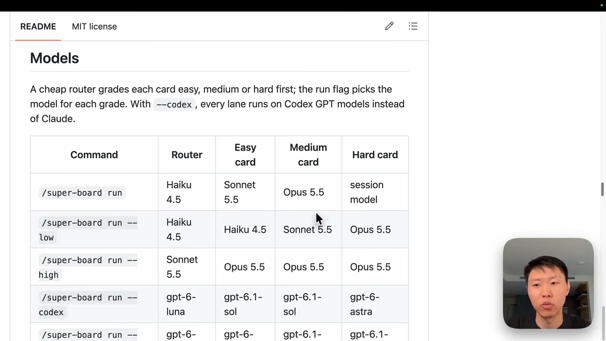
화면의 표를 옮기면 이래요.
| 명령 | 라우터 | 쉬운 카드 | 보통 카드 | 어려운 카드 |
|---|---|---|---|---|
/super-board run | Haiku 4.5 | Sonnet 5.5 | Opus 5.5 | 세션 모델 |
run --low | Haiku 4.5 | Haiku 4.5 | Sonnet 5.5 | Opus 5.5 |
run --high | Sonnet 5.5 | Opus 5.5 | Opus 5.5 | Opus 5.5 |
run --codex | gpt-6-luna | gpt-6.1-sol | gpt-6.1-sol | gpt-6-astra |
설정은 onboard 한 번
설정은 /super-board onboard로 해요. 아래 터미널을 보면 8단계를 차례로 물어요. 필요한 도구 점검(Checks), GitHub 로그인, 보드 고르기, 작업을 머지할 브랜치, AGENTS.md, 에이전트가 혼자 해도 되는 일(Policies), 문제를 찾을 곳(Bug sources), 마지막 확인(Review)이에요. 각 단계에서 Enter를 누르면 추천값이 들어가요.
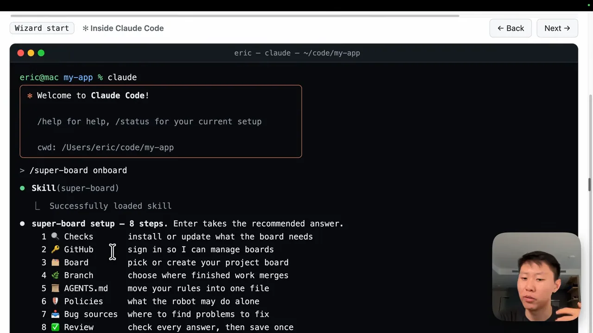
영상 끝에서 발표자는 시작 순서를 세 단계로 정리해요. 설치하고, onboard로 연결을 마친 뒤, run을 치는 거예요. README의 Quick start도 같은 순서예요. run을 하면 여러 에이전트(발표자 말로는 최대 3개 정도)가 동시에 Ready 칸의 티켓을 비워 나가요.
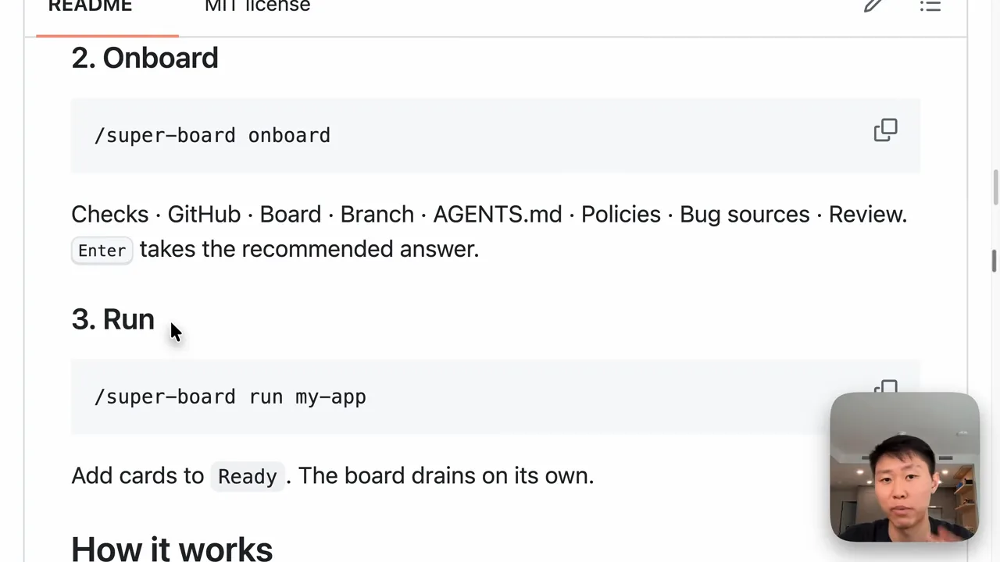
super-build: 준비 → 구현 → 검사 → 인계
티켓이 빌더 칸에 오면 /super-board run이 super-build를 깨워요. 아래 지도에서 super-build 레인은 네 단계로 나뉘어요. 1 Prepare(준비), 2 Build(구현), 3 Check(검사), 4 Hand off(인계)예요. 보라색 점선 상자는 다른 사람이 만든 외부 스킬이고, 아래에 만든 사람 계정이 붙어 있어요.

준비 1: ponytail로 '쓰지 않을 이유'부터 찾기
코드를 쓰기 전에 가장 먼저 도는 스킬이 ponytail이에요. 발표자는 AI(Artificial Intelligence) 에이전트가 중복 코드를 끝없이 써서 파일 하나가 수천 줄까지 불어난다고 지적해요. ponytail은 이걸 막으려고 "이 코드를 정말 써야 하나"를 사다리로 물어요. 아래 SKILL.md의 일곱 칸을 위에서부터 내려가다가 처음 맞는 칸에서 멈춰요.
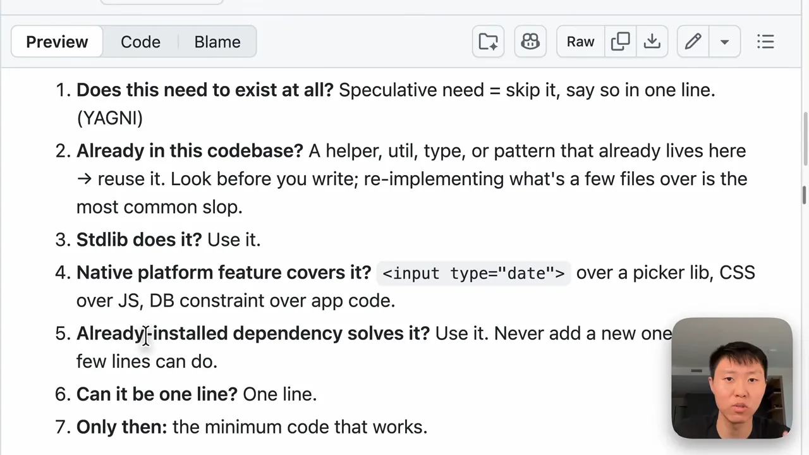
<input type="date">를 쓰는 식이에요. 영상 05:31에서 보기| 칸 | 묻는 것 | 맞으면 |
|---|---|---|
| 1 | 이 기능이 꼭 있어야 하나요? | 추측으로 필요한 거면 건너뛰고 한 줄로 이유만 남겨요 (YAGNI(You Aren't Gonna Need It)) |
| 2 | 코드베이스에 이미 있나요? | 있는 헬퍼·유틸·컴포넌트를 다시 써요 |
| 3 | 표준 라이브러리가 하나요? | 그걸 써요 |
| 4 | 플랫폼 기본 기능이 있나요? | 라이브러리보다 기본 기능, JS(JavaScript)보다 CSS(Cascading Style Sheets), 앱 코드보다 DB(Database) 제약 |
| 5 | 이미 깔린 의존성이 해결하나요? | 그걸 써요. 몇 줄이면 될 일에 새 의존성을 들이지 않아요 |
| 6 | 한 줄로 되나요? | 한 줄로 써요 |
| 7 | 여기까지 다 아니면 | 그제야 동작하는 최소 코드를 써요 |
발표자가 강조하는 효과는 비용이에요. 코드를 많이 쓸수록 토큰도 많이 쓰고 시간도 더 걸려요. 이미 있는 해결책을 쓰면 셋 다 줄어요.
준비 2: Context7로 라이브러리 문서 읽히기
두 번째 준비 스킬은 Context7이에요. 앱은 보통 Vercel, React, NestJS 같은 의존성을 여럿 써요. Context7은 그 라이브러리들의 실제 문서를 읽혀서, 에이전트가 쓰는 법을 알고 나서 첫 줄을 쓰게 해요. 지도에서 Prepare 칸 아래쪽 context7 (docs) 상자가 이 스킬이에요.
구현: Matt Pocock 스킬을 고른 이유
준비가 끝나야 구현으로 넘어가요. 발표자는 채널에서 스펙 주도 개발 스킬을 여럿 리뷰해 왔어요. 아래 화면의 GSD, gstack, Superpowers, Matt Pocock skills가 그 후보예요. 그중 가볍고 모범 사례를 잘 따르며 모델 능력을 잘 끌어낸다는 이유로 Matt Pocock 스킬을 골랐다고 해요.
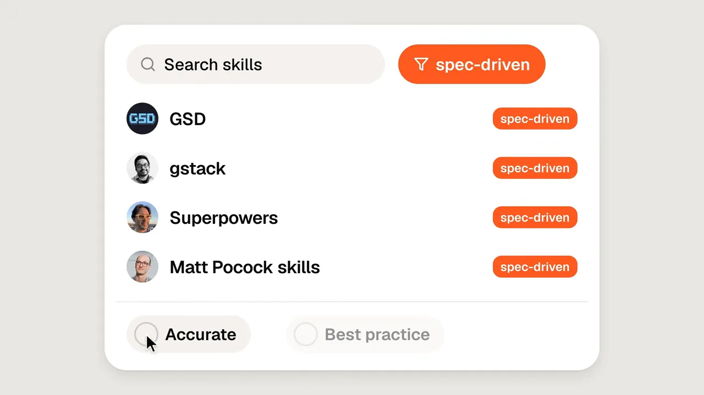
지도의 Build 칸을 보면 티켓 종류에 따라 다른 스킬로 갈라져요. 새 기능(feat)은 implement, 버그(bug)는 diagnosing-bugs, 리팩터링(refa)은 codebase-design으로 가요.
검사와 인계
구현이 끝나면 Check 칸의 세 스킬을 거쳐요. verification으로 정말 됐는지 확인하고, code-review로 코드를 보고, humanizer로 AI가 어려운 말을 늘어놓지 않았는지 걸러요. 마지막 Hand off에서 한 일을 정리해 GitHub 이슈에 올려요. 1장에서 본 [builder] [report] 댓글이 여기서 나와요.
super-qa와 super-review
빌드가 끝나면 super-qa 차례예요. 발표자는 이 단계를 가장 중요하다고 꼽아요. 작은 기능도 출시되면 수많은 사람이 쓰고, 버그 하나가 실제 운영 비용이 되기 때문이에요. super-qa의 목표는 티켓이 정말 끝났는지 검증하는 거예요.
아래 지도에서 super-qa 레인도 단계로 나뉘어요. 준비에 tdd-v2, 구현에 tdd·diagnosing-bugs·ask-matt·vitest·Playwright practices, 검사에 verification·testing-strategy·humanizer가 있어요. vitest, Playwright practices, testing-strategy 상자에는 "not installed in EricOS"와 unknown 표시가 붙어 있어요. 발표자 환경에 아직 깔리지 않은 스킬이라는 뜻으로 보여요.
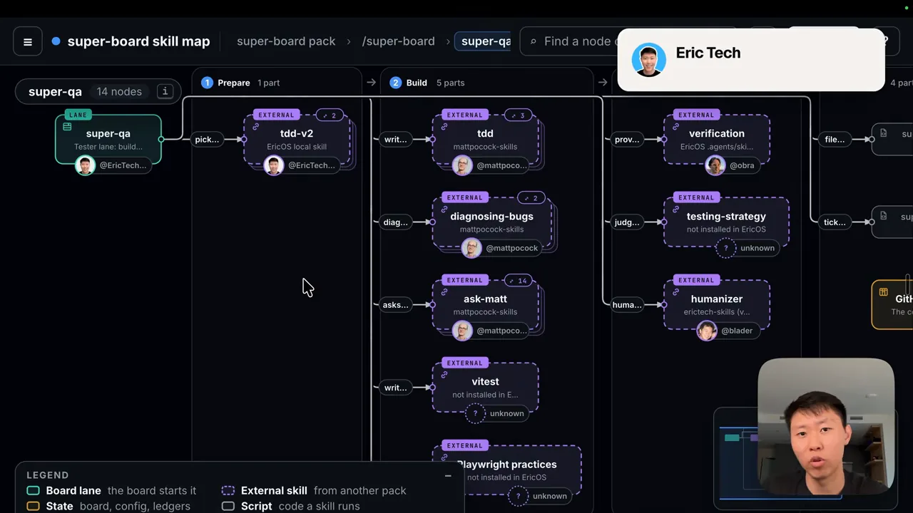
테스트는 아래층부터 쌓아요
발표자가 말하는 super-qa의 차별점은 티켓에 맞는 테스트 라이브러리를 고른다는 거예요. 흔히 Playwright로 화면만 눌러 보고 끝내지만, 그건 마지막 단계일 뿐이에요. 아래 피라미드에서 맨 아래 Unit(Vitest, Jest)부터 채우고, 그 위 Integration(Vitest, Node API(Application Programming Interface))과 Component(React, Testing Library)로 올라가요. 꼭대기 점선 칸이 비어 있는 게 포인트예요. 아래층이 다 통과해야 E2E로 넘어가요.
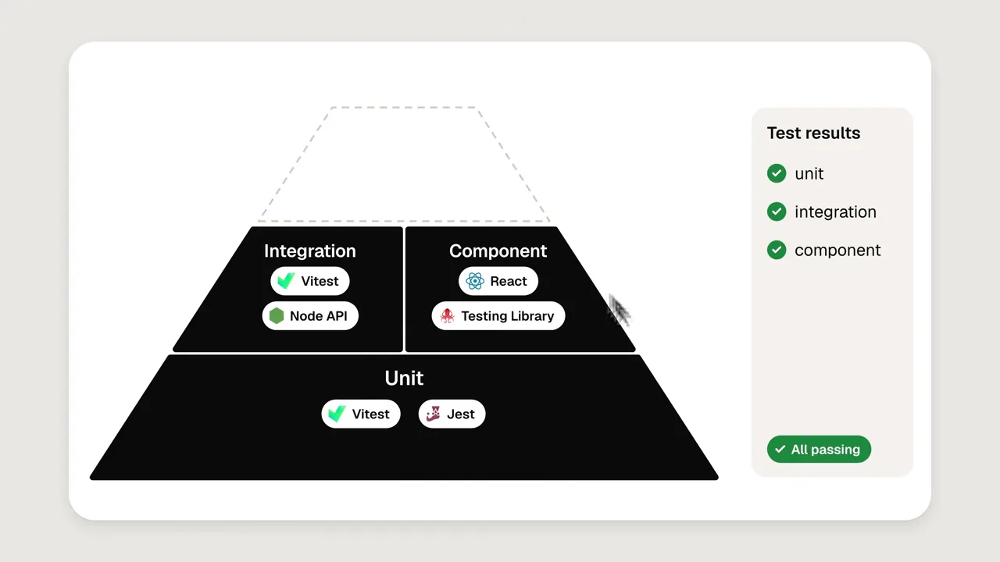
아래층부터인 이유도 설명해요. React 컴포넌트는 여러 함수와 훅을 불러 쓰기 때문에, 그 아래가 흔들리면 위에서 나는 실패의 원인을 찾기 어려워요. 컴포넌트 테스트까지 끝나면 그제야 Playwright나 Cypress 같은 E2E 테스트로 가요. 백엔드라면 스트레스 테스트 같은 다른 종류도 있지만, 영상은 거기까지는 다루지 않아요.
super-review: 머지 직전 마지막 관문
QA를 통과하면 super-review가 받아요. 아래 지도에서 준비 단계는 codebase-design으로 구조를 읽는 거예요. 검사 단계는 code-review, ponytail-review, humanizer 세 가지예요. 발표자는 이 중 ponytail-review(덜 쓸 수 있었는지)와 code-review, codebase-design(구조가 잘 리팩터링됐는지)을 가장 중요하게 짚어요. 인계 단계 오른쪽의 merge gate script가 머지 여부를 정해요.
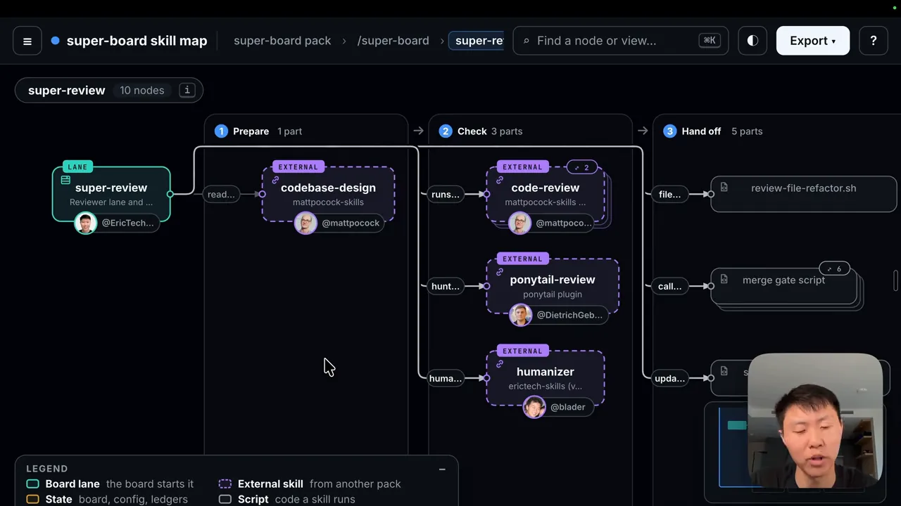
다음 일을 찾는 고리와 부가 기능
super-collect: 다음 일을 스스로 찾는 고리
고리를 닫는 건 /super-collect예요. 화면 설명문대로 출처에서 가져오고(Fetch sources) → 다시 확인하고(Verify) → 사람에게 확인받고(Confirm) → Backlog에 올려요(File to Backlog). 왼쪽 출처는 Sentry, PostHog, GitHub issues, Merged PRs, Architecture, custom 여섯 가지예요. 설명문 끝의 "collecting never moves a card to Ready"도 눈여겨볼 만해요. 수집은 Backlog까지만 올리고, Ready로 옮기는 건 수집이 하지 않아요.
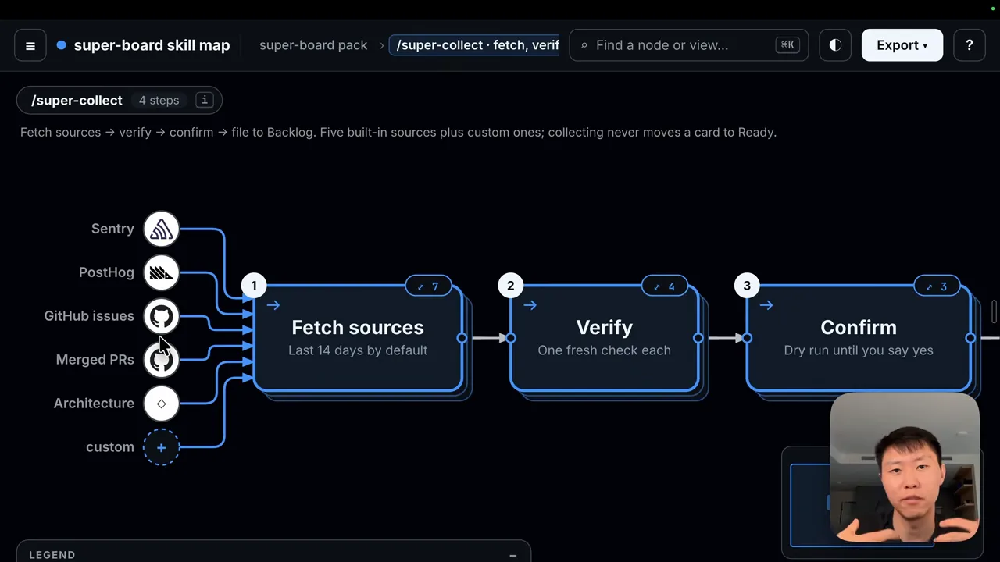
출처는 텔레메트리만이 아니에요. 새 기능을 브레인스토밍하고 싶다면 wayfinder나 grilling 같은 스킬로 아이디어를 GitHub 이슈에 쏟아 넣어도 돼요. 그 이슈도 같은 확인 과정을 거쳐 Backlog에 올라가요.
UI 다듬기 루프
화면 하나가 'AI 슬롭'처럼 보일 때 쓰는 고리도 있어요. 발표자가 직접 만든 /ui-refine-loop예요. 아래 지도 위쪽 설명문에 흐름이 다 있어요. 방향 정하기 → 점검 → 고치기 → 리뷰 → 초안 PR이고, 기본 5바퀴를 돌아요. 심각한 문제(P0/P1) 없이 두 번 연속 깨끗하거나, 되돌린 바퀴가 두 번이거나, 에이전트가 죽으면 멈춰요.
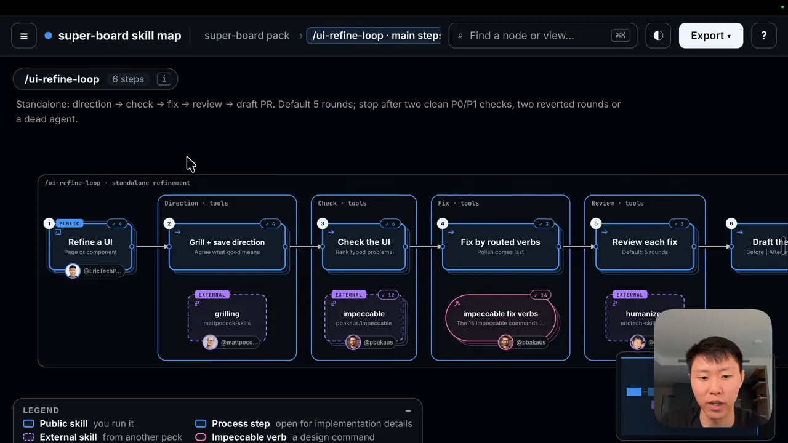
실제로 방향을 주면 먼저 몇 가지 질문으로 의도를 확인해요. 그다음 impeccable의 명령들을 단계별로 골라 써요. 아래 화면의 Diagnose 칸에 critique(UX(User Experience) 검토)와 audit(기술 점검)이 있어요. Fix 칸에는 harden(예외 상황), clarify(헷갈리는 문구), adapt, optimize가 있어요. Style 칸에는 layout, typeset, colorize, bolder가, Motion 칸에는 animate, delight가 있어요. 끝까지 돌면 다시 Diagnose로 돌아가 남은 문제를 찾아요.
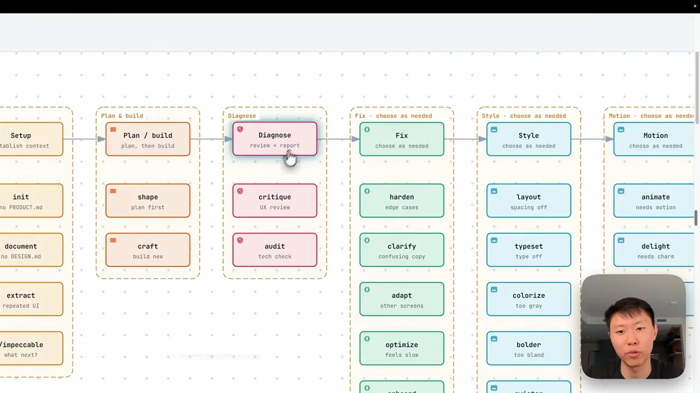
발표자는 보통 몇 바퀴 돌면 처음보다 훨씬 나은 화면이 나온다고 해요.
git-sync와 가드 훅
부가 스킬도 있어요. 아래 /git-sync 지도는 commit · pull · push를 한 번에 하는 스킬이에요. 충돌이 나면 resolving-merge-conflicts로 풀고, 푸시 직전에 guard-protected-push 훅을 거쳐요. 발표자는 좋은 커밋 메시지를 쓰는 것도 이 스킬의 일이라고 해요.
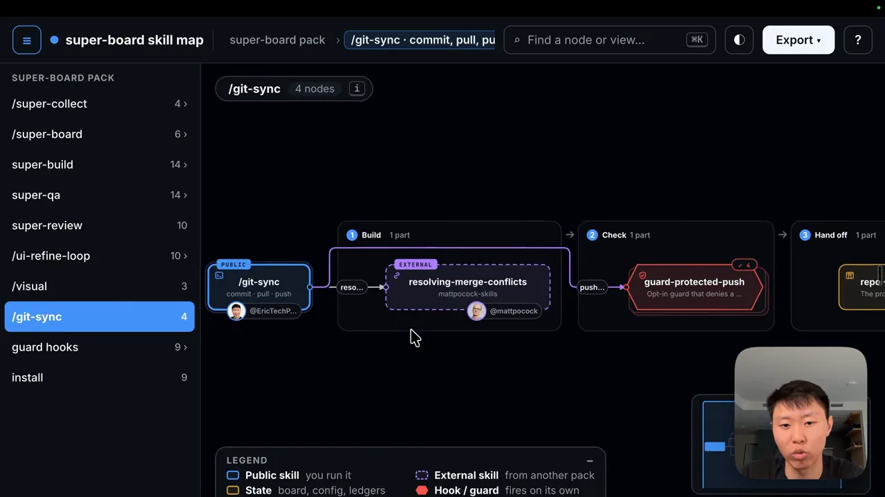
가드 훅은 에이전트가 위험한 일을 못 하게 막아요. 발표자는 비밀값이 저장소에 들어가는 걸 막고, 스킬 평가 파일을 챙기고, 낡은 README를 자동으로 고친다고 소개해요. README의 표를 보면 훅마다 막는 일이 한 줄씩 적혀 있어요.
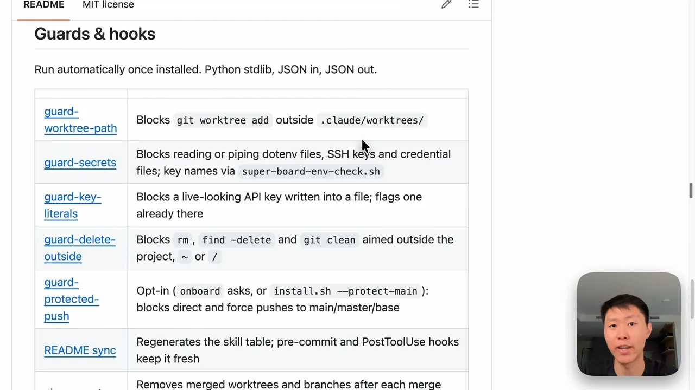
| 훅 | 하는 일 |
|---|---|
guard-worktree-path | .claude/worktrees/ 밖에 워크트리를 만들지 못하게 막아요 |
guard-secrets | dotenv 파일, SSH(Secure Shell) 키, 인증 파일을 읽거나 넘기지 못하게 막아요 |
guard-key-literals | 진짜 같은 API 키를 파일에 쓰지 못하게 막아요 |
guard-delete-outside | 프로젝트 밖이나 ~, /를 겨냥한 삭제를 막아요 |
guard-protected-push | 선택 사항. main 등 기본 브랜치로 직접·강제 푸시를 막아요 |
| README sync | 스킬 표를 다시 만들어 README를 최신으로 유지해요 |